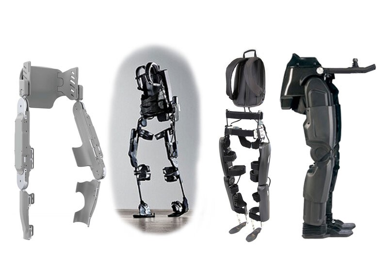

<br>
#### My Project Proposals
In this seven-week course, I have decided to create a prototype for a walking device. I want to build a machine that helps my mom with her daily life. My mom has Multiple Sclerosis. This autoimmune disease attacks her nervous system and affects her cognitive abilities and immune system. While I may not be able to help her immune system, a prototype for this device might help her walk for years to come.
<p>My oringinal idea was a walking stabilizer. Walking is the one thing my mom refuses to give up on, so I want to give her the chance to walk for as long as possible. In this project, I would be creating a prototype for an exoskeleton that straps around the waist and hinges at the hip and knee. The device would be programmed so that when an individual leans forward (or maybe presses a button) the exoskeleton will move the legs to make that person walk forward. The femur and calf sections will ideally be adjustable in length so they can be adjusted to any person. Shown below are a few similar images to how I want my project to look and function.</p>
<img src="../pictures/Legs1.jpg">
